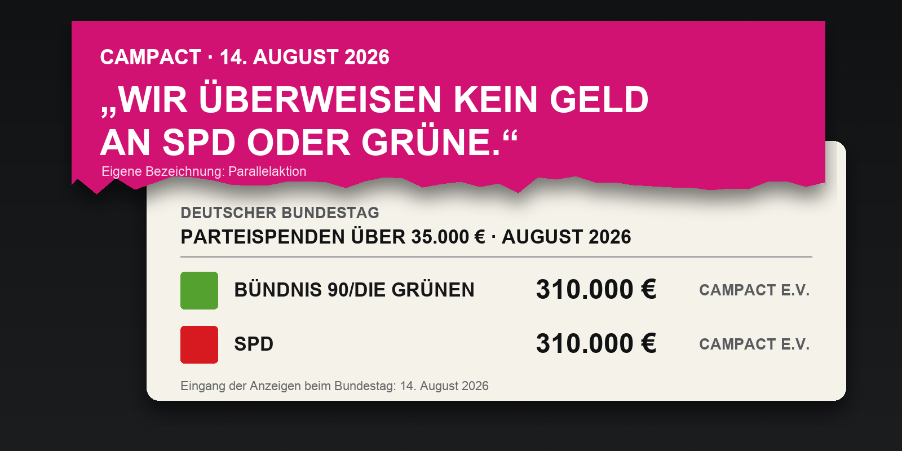

Die Spende ohne Überweisung

Campact überweist nach eigener Darstellung keinen Cent an SPD oder Grüne. Trotzdem führt der Deutsche Bundestag den Verein im August zweimal unter „Parteispenden über 35.000 Euro“: 310.000 Euro für die Grünen, 310.000 Euro für die SPD.
Der Widerspruch liegt nicht in den Zahlen, sondern in der Konstruktion. Campact bezahlt die Werbung selbst: 160.000 Euro für Postwurfsendungen, 50.000 für Plakate, 100.000 für Printanzeigen, 230.000 für Digitalanzeigen und 80.000 Euro für Agenturleistungen. Die Parteien erhalten kein Geld auf ihr Konto. Sie erhalten Wahlwerbung, ohne sie bezahlen zu müssen.
Wahlkampfhilfe ohne Geldfluss
Campact nennt das eine „Parallelaktion“. Der Verein wirbt in Sachsen-Anhalt ausdrücklich dafür, strategisch SPD oder Grüne zu wählen, damit beide die Fünfprozenthürde überwinden und eine AfD-Regierung verhindert wird. Die Aktion läuft nach Campacts eigener Darstellung ohne Auftrag oder Steuerung der Parteien.
Den wirtschaftlichen Wert müssen SPD und Grüne trotzdem melden. Deshalb stehen die beiden Beträge im Register des Bundestages. Beide Zuwendungen wurden dort am 14. August veröffentlicht.
Campact kritisiert, das Register unterscheide nicht zwischen Parallelaktionen und Parteispenden. Der Bundestag veröffentlicht beides unter derselben Überschrift.
So entsteht die Spende ohne Überweisung: Campact kauft die Kampagne, SPD und Grüne bekommen den Nutzen. Der Geldfluss bleibt beim Verein. Die Wahlkampfhilfe nicht.
Mehr dazu: Campact im Glashaus